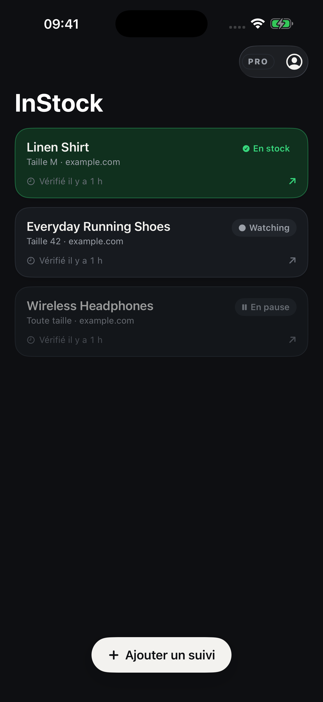

Ajoutez votre lien
Collez une page produit publique ou partagez-la depuis Safari. Précisez vos critères si vous le souhaitez.
Suivi de stock & de prix
Collez un lien produit, choisissez une taille, une variante ou un prix cible, puis suivez ses changements depuis une seule liste.
Télécharger sur l’App StorePour iPhone · iOS 17 ou version ultérieure · Achats intégrés

Dans l’app
Collez une page produit publique ou partagez-la depuis Safari. Précisez vos critères si vous le souhaitez.
Retrouvez les pages suivies et leurs informations de stock et de prix dans une liste claire.
Une notification est envoyée lorsqu’une vérification détecte une disponibilité ou un prix correspondant à vos critères.
Suivez gratuitement un article actif. InStock Pro est facultatif et permet de suivre jusqu’à 30 articles actifs. Les formules et prix locaux sont affichés dans l’app avant l’achat.
Les vérifications sont périodiques. Les alertes peuvent être retardées et le stock peut changer avant votre visite. La compatibilité dépend du marchand et de la page ; activez les notifications.
InStock est indépendant des marchands. L’app n’achète pas les produits et ne réserve pas le stock à votre place.
Ouvrez la fiche officielle et les offres disponibles sur l’App Store.